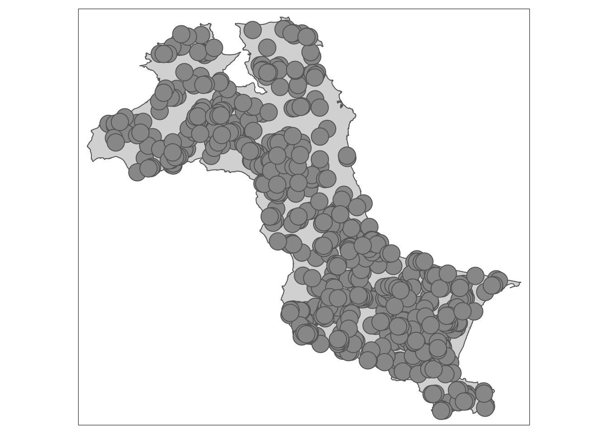
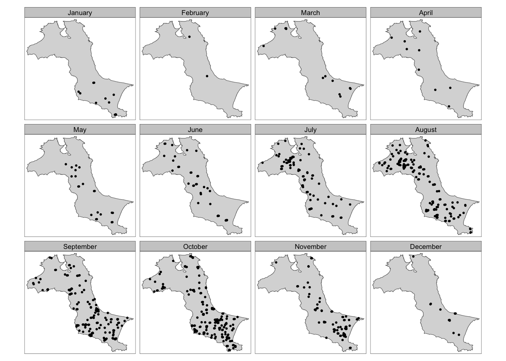
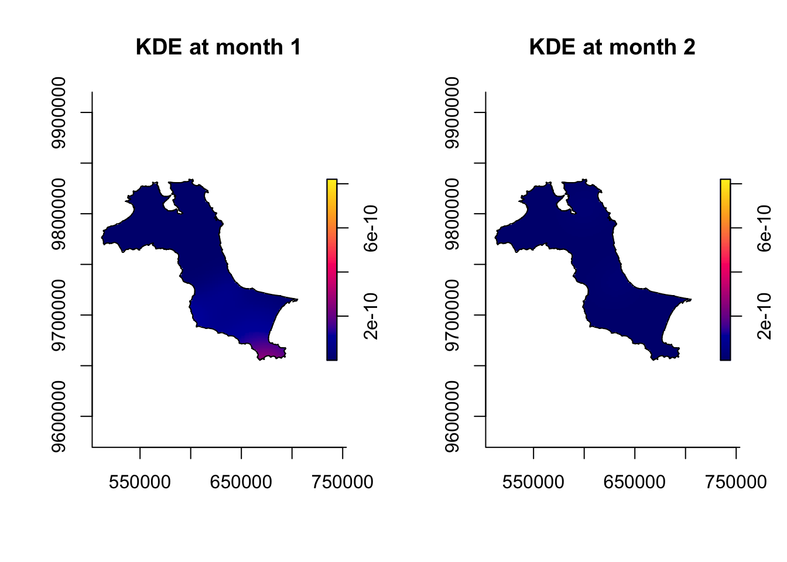
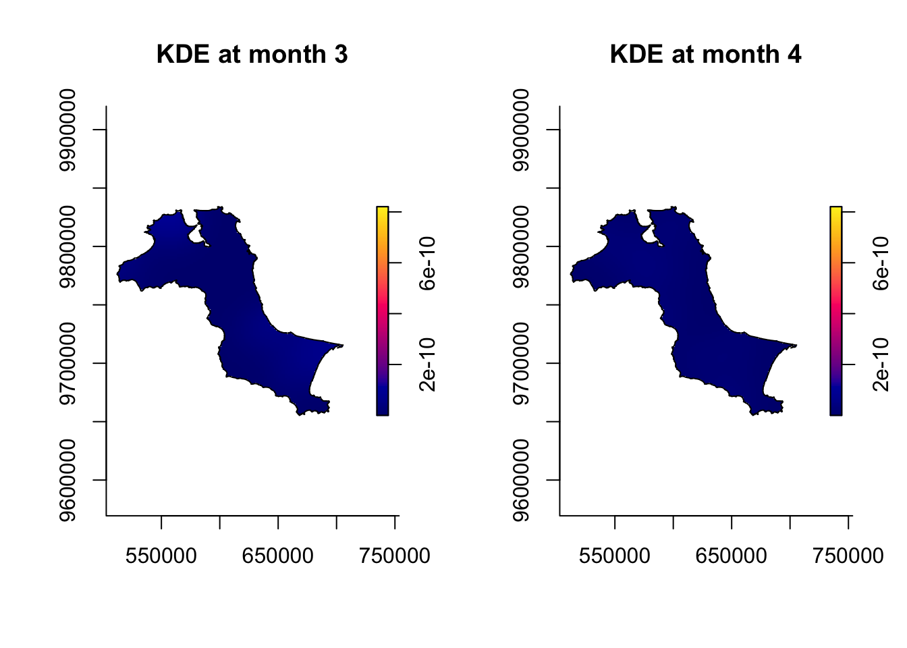
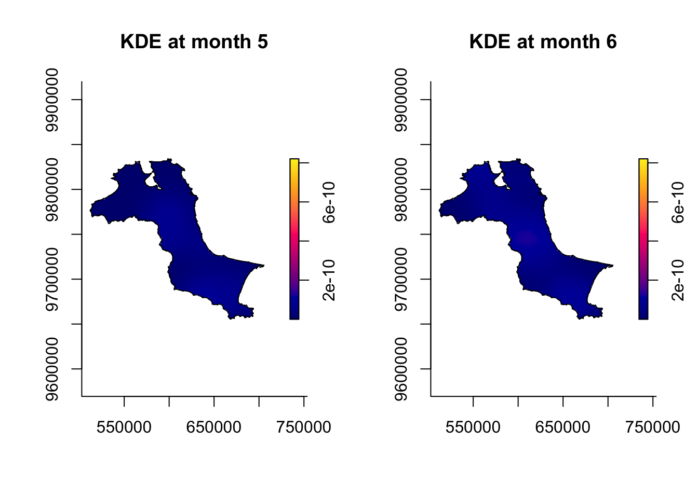
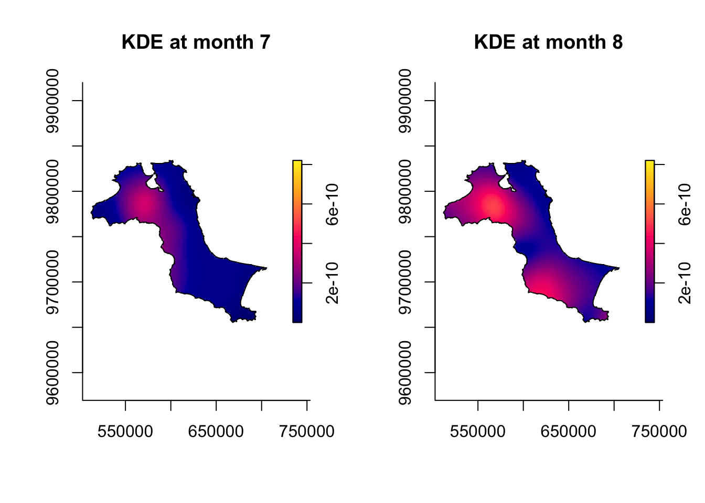
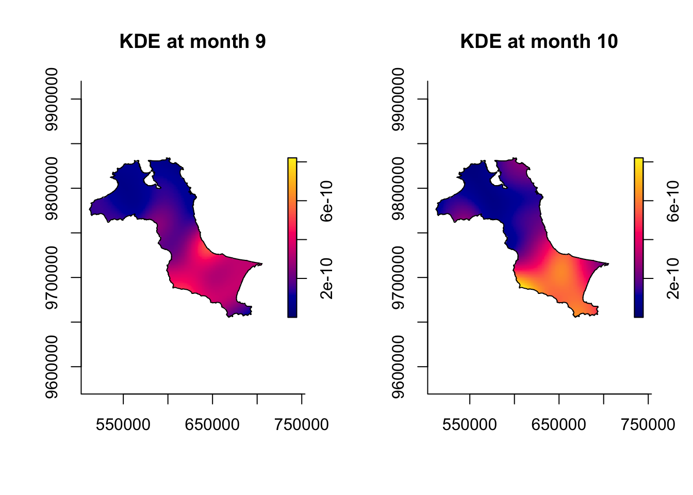
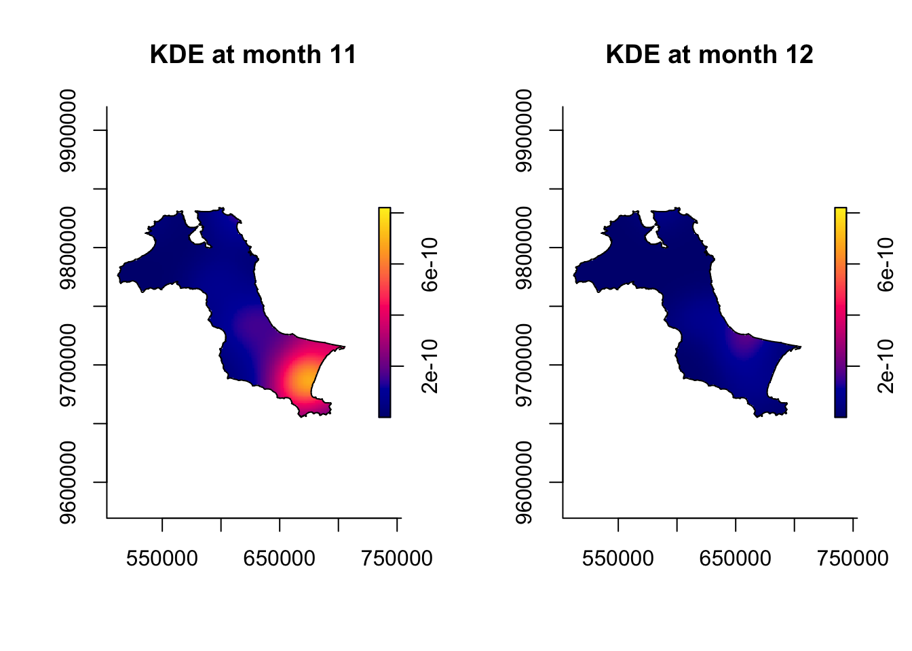

pacman::p_load(sf, raster, spatstat, tmap, tidyverse, sparr)CE4/H4: Spatial-Temporal Point Patterns Analysis
In-class/Hands-On Exercise 4
CE4.1 Overview and explanation
A spatio-temporal point process (also called space-time or spatial-temporal point process) is a random collection of points, where each point represents the time and location of an event. Examples of events include incidence of disease, sightings or births of a species, or the occurrences of fires, earthquakes, lightning strikes, tsunamis, or volcanic eruptions.
Spatio-temporal point patterns analysis (STPPA) is becoming increasingly necessary, given the rapid emergence of geographically and temporally indexed data in a wide range of fields. Several spatio-temporal point patterns analysis methods have been introduced and implemented in R in the last ten years. Today’s exercise will use data on a real-world forest fire event in Kepulauan Bangka Belitung, Indonesia from 1st January to 31st December 2023, to illustrate the methods, procedures and interpretations of STPPA.
This chapter shows how various R packages can be combined to run a set of spatio-temporal point pattern analyses in a guided and intuitive way. A real world forest fire event in from 1st January 2023 to 31st December 2023 is used to illustrate the methods, procedures and interpretations.
CE4.2 Research questions
By the end of the exercise I hope to find out:
- If the locations of forest fires in Kepulauan Bangka Belitung are spatially and spatially-temporally independent, and;
- If not, where and when the observed forest fire locations tend to cluster.
CE4.3 The data
forestfires, a CSV file that provides locations on forest fires from Moderate Resolution Imaging Spectroradiometer (MODIS) sensor data.Kepulauan_Bangka_Belitung, which as the name suggests marks the boundary of the region of Kepulauan Bangka Belitung.
CE4.4 New R Packages
A new R package to be introduced today is rgdal, which is used for importing geospatial data in the GIS file format and saving it as a Spatial* DataFrame.
In addition, sparr gives us the ability to estimate fixed and adatptive kernel-smoothed spatial relative risk surfaces via the density-ratio method, and perform subsequent inferrence.
CE4.5 Importing and preparing study area
CE4.5.1 Importing study area and creating OWIN object
kbb <- st_read(dsn="data/rawdata", layer="Kepulauan_Bangka_Belitung") %>%
st_union() %>%
st_zm(drop=TRUE, what="ZM") %>% # Drop Z-values
st_transform(crs=32748) # EPSG: IndonesiaReading layer `Kepulauan_Bangka_Belitung' from data source
`/Users/kendricktty/Gits/SMU_CS/is415-site/InClass/ICE4/data/rawdata'
using driver `ESRI Shapefile'
Simple feature collection with 298 features and 27 fields
Geometry type: POLYGON
Dimension: XYZ
Bounding box: xmin: 105.1085 ymin: -3.116593 xmax: 106.8488 ymax: -1.501603
z_range: zmin: 0 zmax: 0
Geodetic CRS: WGS 84st_as_s2(): dropping Z and/or M coordinate# This dataset keeps Z-dimension (height) data. We might want to remove it if we are to do KDE
kbb_owin <- as.owin(kbb)
kbb_owinwindow: polygonal boundary
enclosing rectangle: [512066.8, 705559.4] x [9655398, 9834006] unitsCE4.6 Importing and preparing forest fire data
# Creating an SF dataframe from a CSV removes "longitude" and "latitude", transforming it to a "geometry" field
fire_sf <- read_csv("data/rawdata/forestfires.csv") %>% st_as_sf(coords=c("longitude", "latitude"), crs=4326) %>% st_transform(crs=32748)Rows: 741 Columns: 15
── Column specification ────────────────────────────────────────────────────────
Delimiter: ","
chr (3): satellite, instrument, daynight
dbl (11): latitude, longitude, brightness, scan, track, acq_time, confidenc...
date (1): acq_date
ℹ Use `spec()` to retrieve the full column specification for this data.
ℹ Specify the column types or set `show_col_types = FALSE` to quiet this message.We will want to convert our SF object into ppp, which only accepts numerical or character data, later on. We will therefore need to convert our acq_date fields into numeric fields.
fire_sf <- fire_sf %>% mutate(DayOfYear=yday(acq_date)) %>%
mutate(Month_num=month(acq_date)) %>%
mutate(Month_fac=month(acq_date, label=TRUE, abbr=FALSE))CE4.7 Visualising fire locations
CE4.7.1 As points
# tm_shape(kbb) + tm_polygons() + tm_shape(fire_sf) + tm_dots()
tm_shape(kbb) + tm_polygons() + tm_shape(fire_sf) + tm_bubbles()
CE4.7.2 Over time
tm_shape(kbb) + tm_polygons() + tm_shape(fire_sf) + tm_dots(size=0.1) + tm_facets(by="Month_fac", free.coords=FALSE, drop.units=TRUE)
# free.coords: All points have the same coordinate pairsCE4.8 Computing STKDE by Month
Using sparttemp.density() of the sparr package, we are able to compute spatial-temporal KDE (STKDE).
CE4.8.1 Forest fires by month (ppp)
fire_month <- fire_sf %>% select(Month_num)
fire_month_ppp <- as.ppp(fire_month)
fire_month_pppMarked planar point pattern: 741 points
marks are numeric, of storage type 'double'
window: rectangle = [521564.1, 695791] x [9658137, 9828767] unitssummary(fire_month_ppp)Marked planar point pattern: 741 points
Average intensity 2.49258e-08 points per square unit
Coordinates are given to 10 decimal places
marks are numeric, of type 'double'
Summary:
Min. 1st Qu. Median Mean 3rd Qu. Max.
1.000 8.000 9.000 8.579 10.000 12.000
Window: rectangle = [521564.1, 695791] x [9658137, 9828767] units
(174200 x 170600 units)
Window area = 29728200000 square unitsany(duplicated(fire_month_ppp))[1] FALSEfire_month_owin <- fire_month_ppp[kbb_owin]
summary(fire_month_owin)Marked planar point pattern: 741 points
Average intensity 6.424519e-08 points per square unit
Coordinates are given to 10 decimal places
marks are numeric, of type 'double'
Summary:
Min. 1st Qu. Median Mean 3rd Qu. Max.
1.000 8.000 9.000 8.579 10.000 12.000
Window: polygonal boundary
2 separate polygons (no holes)
vertices area relative.area
polygon 1 47493 11533600000 1.00e+00
polygon 2 256 306427 2.66e-05
enclosing rectangle: [512066.8, 705559.4] x [9655398, 9834006] units
(193500 x 178600 units)
Window area = 11533900000 square units
Fraction of frame area: 0.334CE4.8.2 Spatio-temporal KDE
st_kde <- spattemp.density(fire_month_owin)Calculating trivariate smooth...Done.
Edge-correcting...Done.
Conditioning on time...Done.summary(st_kde)Spatiotemporal Kernel Density Estimate
Bandwidths
h = 15102.47 (spatial)
lambda = 0.0304 (temporal)
No. of observations
741
Spatial bound
Type: polygonal
2D enclosure: [512066.8, 705559.4] x [9655398, 9834006]
Temporal bound
[1, 12]
Evaluation
128 x 128 x 12 trivariate lattice
Density range: [1.233458e-27, 8.202976e-10]CE4.8.3 Plotting the spatio-temporal KDE object
This code chunk plot()s the KDE for the entire year 2023. As expected, the KDEs indicate far fewer occurrences of forest fires in the area before June 2023 and in December 2023 (the rainy season usually falls between December and February.)
# sparr
tims <- c(1, 2, 3, 4, 5, 6, 7, 8, 9, 10, 11, 12)
par(mfcol=c(1,2))
for (i in tims) {
plot(st_kde, i, override.par=FALSE, fix.range=TRUE, main=paste("KDE at month", i))
}




